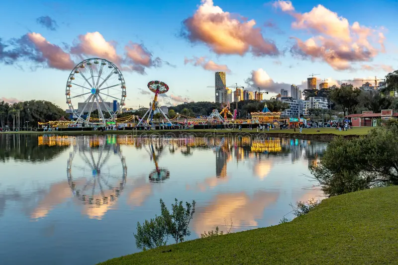
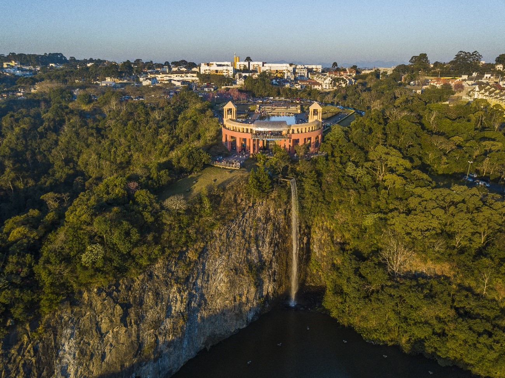
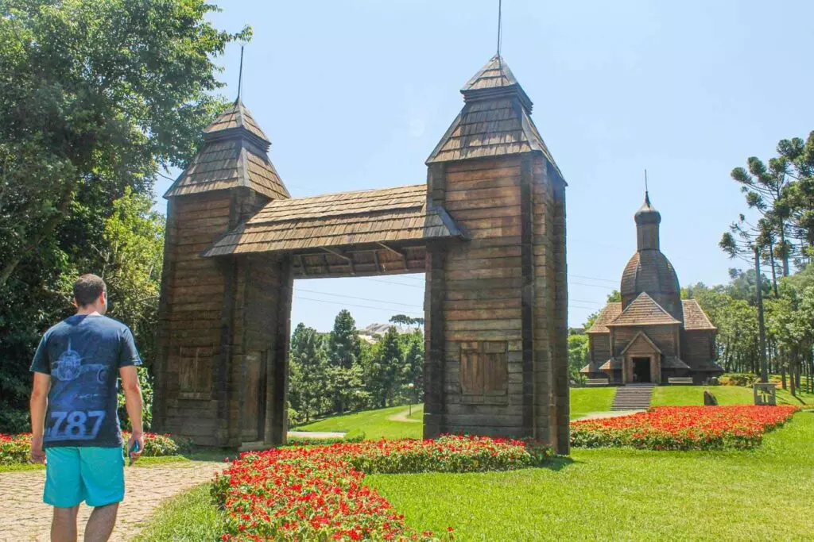
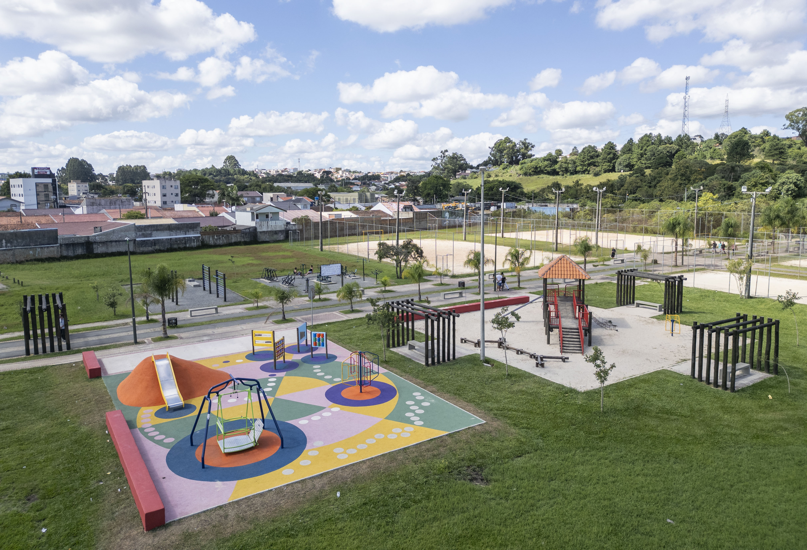

Curitiba é reconhecida por seus parques e áreas verdes, que proporcionam qualidade de vida, lazer e contato com a natureza para moradores e visitantes. Espalhados por diferentes regiões da cidade, esses espaços oferecem estrutura para caminhadas, esportes, passeios em família e momentos de descanso, além de contribuírem para a preservação ambiental e embelezamento urbano. Entre os destaques está o Parque Atuba, localizado na região norte, conhecido por seu ambiente tranquilo, lagos, pistas de caminhada, ciclovias e áreas esportivas, sendo uma ótima opção para lazer em família. O Parque Barigui é um dos mais famosos de Curitiba, com ampla área verde, grande lago e presença marcante das capivaras, além de oferecer pistas para corrida, ciclovias e espaços de convivência. Já o Parque Tingui combina natureza e cultura, abrigando o Memorial Ucraniano e oferecendo trilhas, gramados e belas paisagens às margens do Rio Barigui. Por fim, o Parque Tanguá é considerado um dos mais belos da cidade, construído em uma antiga pedreira e famoso por seus jardins, mirantes, lagos e vista panorâmica, especialmente ao pôr do sol. Juntos, esses parques representam a importância de Curitiba como referência em planejamento urbano e preservação de áreas verdes.
| Parque | Comida | Trilha | Esportes | Playground |
|---|---|---|---|---|
| Parque Barigui | Sim | Sim | Sim | Sim |
| Parque Tanguá | Não | Sim | Não | Não |
| Parque Tingui | Não | Sim | Não | Sim |
| Parque Atuba | Não | Sim | Sim | Sim |